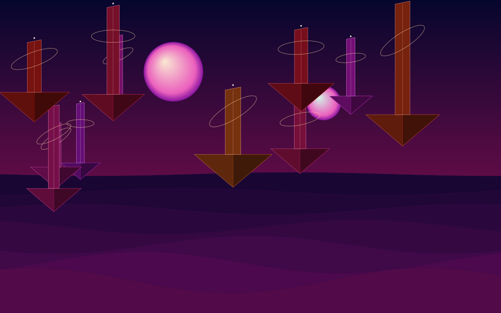

Experiments
INDEX / 001—017 Explore ↗
Explore ↗Tandava parallax
The parallax effect from tandavacult.com. Scroll through three depths of stars.
 Explore ↗
Explore ↗Invader Fractal
Jared Tarbell’s 15-bit creatures, recursively filling every gap.
 Explore ↗
Explore ↗Iterative IK
Jared Tarbell’s connected nodes, pulling themselves into motion.
 Explore ↗
Explore ↗Hyperspace bloom
A four-dimensional cube unfolds into a luminous flower.
 Explore ↗
Explore ↗Gravity is a suggestion
Bend a spinning disk of stars around a wandering singularity.
 Explore ↗
Explore ↗Infinite descent
Fall through recursive architecture with no outside.

Explore ↗Dream strata
Floating monuments and impossible skies, layer upon layer.
 Explore ↗
Explore ↗Mandelbulb
An impossible fossil. A universe folded into one object.
 Explore ↗
Explore ↗Cathedral of holes
Recursive architecture, carved out of a single cube.
 Explore ↗
Explore ↗Julia tide
Move your hand. Rewrite the rules of an entire world.
 Explore ↗
Explore ↗Recursive orchard
One branch becomes three. Your cursor is the weather.
 Explore ↗
Explore ↗Sierpiński relic
Divide, disappear, and pull the pieces apart.
 Explore ↗
Explore ↗Chaos loom
A million small decisions. One impossible orbit.
 Explore ↗
Explore ↗Silk / wind
A sculpture you can disturb.
 Explore ↗
Explore ↗Impossible water
Touch a surface made of light.
 Explore ↗
Explore ↗Afterimage
Your movement becomes the work.
 Explore ↗
Explore ↗Electric horizon
Step inside a neon daydream.